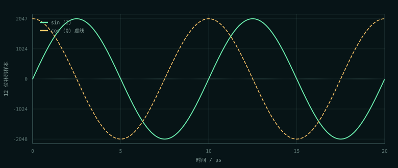
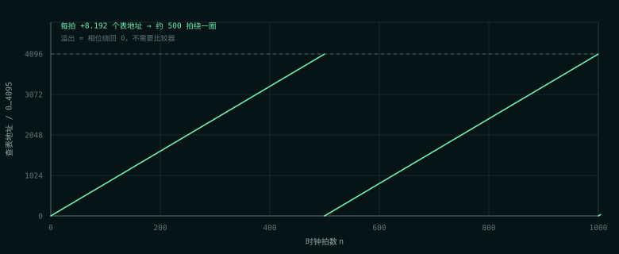

PART ONE · 通信原理
先让角度转起来
本振不是“算”出来的，是“转”出来的
一个频率为 f 的复正弦，可以写成 ej2πft。它的全部信息只有两件：角度以多快的速度转，以及此刻转到哪。NCO 把这两件事分别交给一个加法和一个寄存器。
连续时间里角度是 2πft；离散到每 Ts = 1/fclk 采一次，第 n 拍的角度就是 2πfnTs。与其每拍重新乘一次，不如只算增量：
Δφ = 2π · FTW / 2PHASE_W
fout = FTW · fclk / 2PHASE_W
这里 FTW（frequency tuning word，频率控制字）是每拍加进相位寄存器的整数。因为寄存器只有 PHASE_W 位，加到 2PHASE_W 自然溢出回零——二进制回绕就是“转完一圈”，不需要比较器、减法器或状态机。
NCO 最漂亮的地方不是“查表”，而是用溢出代替归零判断。计数器要写 if (cnt == N-1) cnt <= 0;，NCO 只写 phase <= phase + FTW;。这一行同时完成了“走一步”和“绕一圈”。
三个位宽，三件不同的事
初学者最容易把 PHASE_W 和 LUT_AW 混成一个东西。它们管的其实是两件完全不同的事：一个管频率能拧多细，一个管波形能有多干净。
| 参数 | 管什么 | 本设计取值 | 代价 |
|---|---|---|---|
PHASE_W | 频率分辨率 = fclk / 2PHASE_W | 32 位 → 0.0116 Hz | 加法器宽一点，触发器多一点 |
LUT_AW | 相位截断后的查表精度，决定杂散 | 12 位 → 4096 项 | ROM 容量按 2LUT_AW 指数增长 |
AW | 幅度量化位数，决定量化 SNR | 12 位 → 约 74 dB | 每个表项变宽，ROM 线性增长 |
如果图省事把 PHASE_W 也设成 12，50 MHz 时钟下频率分辨率只有 12,207 Hz。想做 100 kHz，FTW 只能取 8，实际输出 97,656 Hz，误差约 −2.34%。省下 20 个触发器，换来 2.3% 的频率偏差，不划算。
精度花在频率上，不花在波形上。相位累加器给 32 位，查表地址只取高 12 位；前者决定“能不能调准”，后者决定“波形干不干净”。
相位截断：省 ROM 的代价
32 位相位不能直接当 4096 项表的地址，只能取高 12 位，低 20 位被丢掉。这叫相位截断（phase truncation）。它不会改变平均频率——每拍仍然平均前进 8.192 个表地址——但会让每一拍的相位有微小抖动，频谱上因此出现杂散。
经验规律是：地址每多 1 位，最坏杂散大约改善 6 dB。代价是 ROM 容量翻倍。4096 项 × 12 位 = 49,152 bit，在 7 系列 FPGA 上大约占 3 个 BRAM tile；加到 8192 项就约 6 个。所以 4096 不是随便定的，它是“杂散够用”和“BRAM 够省”的折中。
本设计里 FTW = 8,589,934，每拍前进 8.192 个表地址，一个周期正好 500 个采样点，8192 点 ILA 窗口里是 16.384 个周期。
正交不是“两路一样”，是“同一个相位”
NCO 同时输出 sin 和 cos，两者来自同一个相位寄存器，只是查了两张表。所以它们的 90° 相位差是生成时保证的，不靠模拟器件的匹配，也没有温漂和老化。
这一点对复数混频至关重要：混频器需要的本振是 cos + j·sin，即 ejφ。如果 I/Q 两路幅度不等或相位不是精确 90°，镜像抑制就会变差；而数字 NCO 把这两个误差从“器件问题”变成了“位宽和表的问题”，可以算、可以测、可以复现。


频率误差：截断让方向可预测
FTW 只能取整，本设计一律向下截断。理由是让误差方向可预测：截断必然让 FTW 偏小，实际频率必然偏低，偏差上界是 1 个 FTW LSB。四舍五入会让误差在正负之间跳，讲误差时说不清方向。
fout = 8,589,934 × 50,000,000 / 232 = 99,999.9931 Hz
偏差 = −0.0069 Hz ≈ −0.069 ppm （方向：偏低，和截断约定一致）
这个量级用“数周期”根本测不出来：100 个周期的频率分辨率只有约 130 ppm。它只能靠算术对账验证，不能靠肉眼。
PART TWO · FPGA 实现
一个加法器，一块 ROM
结构：相位寄存器 + 双路查表
表从哪来：脚本生成，仿真和综合读同一份
仿真里可以用 $sin 现算，但 Vivado 综合不了 $sin。所以表必须在 PC 上离线生成成常量文件，RTL 用 $readmemh 读入。这样仿真和综合读的是同一份数据，不会出现“仿真对、上板错”。
sin.mem / cos.mem // 4096 行 × 12 位，二进制补码，一行一个十六进制数 gen_lut.py // PC 上算 sin/cos、量化、写文件 tb_lut.v // 表本身的 12 个检查点，已并入 make sim
RTL 里读表的路径由宏 NCO_LUTDIR 给出，仿真和综合各传各的绝对路径。这个宏不是“可选的整洁”，而是必须的：$readmemh 的路径相对于进程工作目录，不是相对于 .v 文件。仿真在 build/ 跑，综合在 .runs/synth_1/ 跑，相对路径永远错，而且 iverilog 不报错，只给你一片 x。
定点：为什么幅值停在 ±2047
sin/cos 天然有负半周，所以表里存 12 位二进制补码。12 位能表示 −2048 到 +2047，但本设计只用到 ±2047，不用 −2048。原因是对称量化：如果用满 −2048，正负幅度不对称，会在表里引入一个微小的直流偏置；后面做复数混频时，这个直流会污染频谱。
代价是损失 1 个负向码字，约 0.02 dB 的动态范围；换来的是表里无直流、正负严格对称。对一条要做频谱搬移的通路，这笔交易很划算。
RTL 的三个关键点
// 1. 相位一直加，溢出就是绕一圈 phase <= phase + FTW; // 2. 只取高位做地址：低位被截断 addr <= phase[PHASE_W-1 -: LUT_AW]; // 3. 表输出声明为 signed，负数才不会被当成大正数 reg signed [AW-1:0] fsin_o, fcos_o;
FTW 是编译期常量，不是运行期算出来的。RTL 里只有一个加法器；FTW 的乘除、取整、位宽溢出都在 localparam 里由综合工具折叠掉。
这里有一个 Verilog 的坑：100,000 × 232 约 4.3 × 1014，远超 32 位。写 1 << 32 在 32 位下是未定义行为，而且不报错。稳妥写法是用实数算完再截断，或用 64 位字面量：
// ✅ 实数算完再截断，综合时折叠成常量 localparam real FTW_REAL = FREQ_HZ * (2.0 ** PHASE_W) / CLK_HZ; localparam integer FTW = $rtoi(FTW_REAL); // ✅ 或者用 64 位字面量 localparam integer FTW = (FREQ_HZ * (64'd1 << PHASE_W)) / CLK_HZ;
验证：黑盒测周期，白盒查表
NCO 的验收分两层：tb_nco.v 的 21 个检查点看行为，tb_lut.v 的 12 个检查点看表本身。行为层不盯某一个固定样本，而盯对采样格点不敏感的关系。
| 判据 | 怎么测 | 结果 |
|---|---|---|
| 周期正确 | 黑盒数 sin 峰值间隔：PHASE_W=16, FTW=1024 → 216/1024 = 64 拍 | 64 拍 |
| 幅度恒定 | sin² + cos² 与理想值 2047² = 4,190,209 的偏差 | 仿真全窗最大 2,591；板上 CSV 2,304。理论上界 2,895，判据 4,096 |
| 频率误差可解释 | 偏差方向与大小对上 FTW 截断，而不是“差不多” | 偏低 ≤ 1 个 LSB |
| 参数真的起作用 | 换 PHASE_W=24 再跑一组（频率不变） | 通过 |
| 反向验证 | 改坏地址移位 / 删输出复位 / sin-cos 互换 | 分别 7 / 2 / 3 条 FAIL |
sin² + cos² 的判据 4,096 比理论上界 2,895 宽约 41%。这不是“拍脑袋放宽”，而是有意宁可漏报、不可误报：它只负责兜住“幅度整体跑偏”这类粗错，真正抓 bug 的是周期、频率和向量逐点比对。
上板看到的是什么
ILA 窗口 8192 点 × 20 ns = 163.84 µs，里面正好 16.384 个周期。触发点落在 fsin=2047 的峰值上；此时 cos 不一定为 0，因为地址每拍跳 8.192 格，采样点通常落在两个表项之间，抓到的可能只是正弦平坦顶部的某个点。这不是正交错了，是离散采样的正常现象。
完整的 ILA 截图、CSV 对账和读图约定在 上板展示 · s01 NCO。那边看波形，这边看“为什么波形应该长这样”。
这一节最容易踩的四个坑
| 现象 | 根因 | 怎么查 |
|---|---|---|
仿真全是 x，板上灯全灭 | $readmemh 路径相对工作目录，表没读进来 | 看 report_utilization 的 BRAM：应该是 3，若是 0 就是表没了 |
| ILA 上波形像“∩ 接 ∪” | 补码被按无符号显示 | 把 ILA 探针改成 signed，或按 v + 2AW 还原 |
| 改了参数，综合结果没变 | 顶层实例化覆盖了底层默认值，模块内改默认值无效 | 看 synth_1/<top>.tcl 里真正的 synth_design 命令行 |
| 频率怎么算都不对 | 1 << 32 在 32 位下溢出/未定义 | 改用 real 或 64 位字面量算 FTW |
还有一个“看起来像坑、其实不是”的现象：资源用量比预期少得离谱，往往不是优化得好，而是有东西被优化没了。NCO 如果真的只剩 2 个寄存器（reset_sync 的两个触发器），先怀疑表没进来，而不是庆祝。
如果只记三件事
- 相位累加器用二进制回绕代替比较逻辑——这是 NCO 的结构灵魂，也是它比“数到 N 归零”的计数器更适合做本振的原因。
PHASE_W管频率精度，LUT_AW管波形纯度——两个位宽职责不同，不要为了省触发器把它们设成一样。- 离散采样点上“某一点的值”不可断言——要断言周期、能量、
sin²+cos²这类对采样格点不敏感的量。